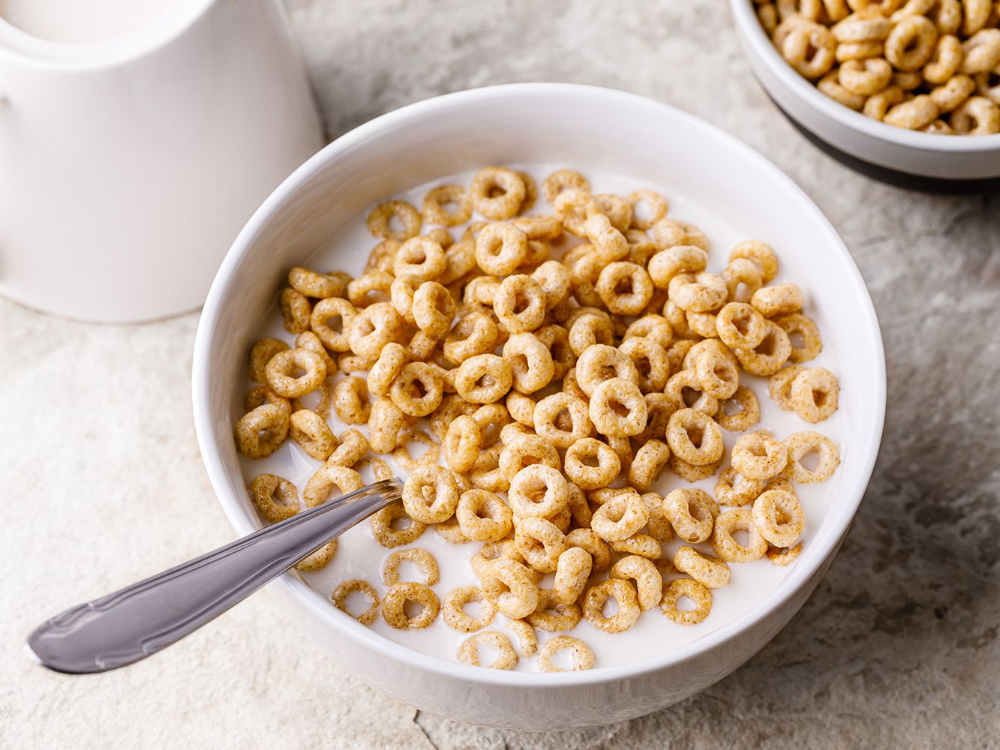

Quit possible the easiest meal to ever make, yet I still put it on the list because of how much I eat
Without a doubt, the food I eat the most is cereal. Any cereal, regardless of taste, I will consume
Cereal can be made in two simple steps! The ingredients are as follows:
Even your cat could do these next 2 steps!